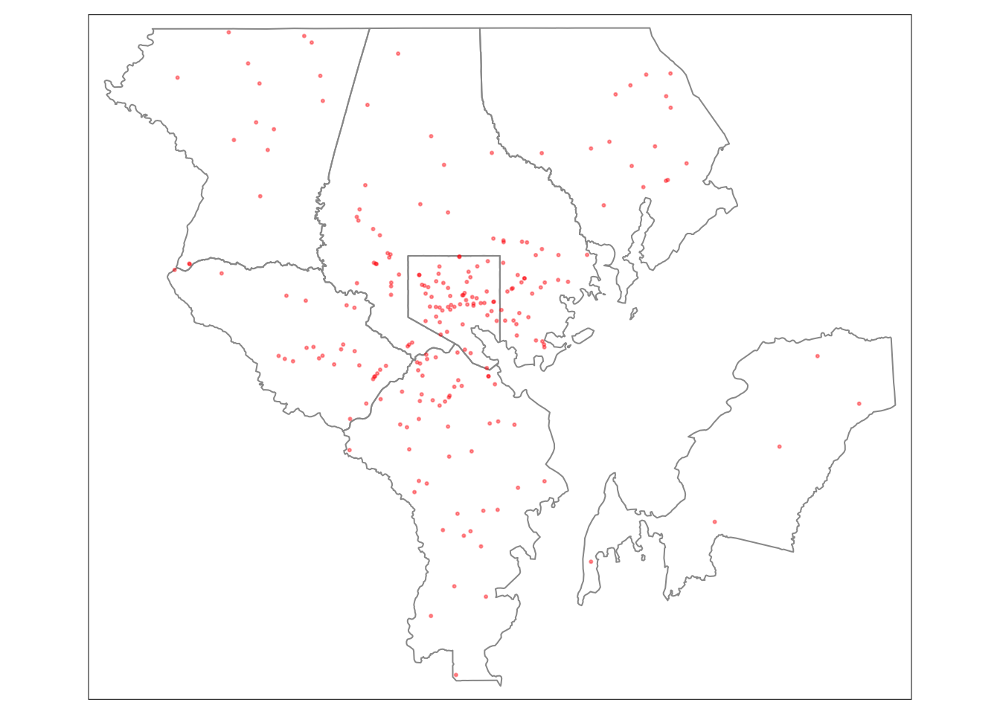
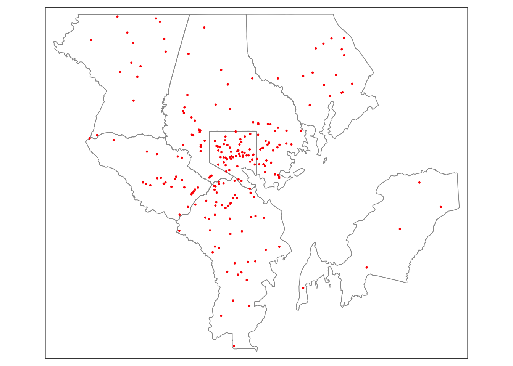
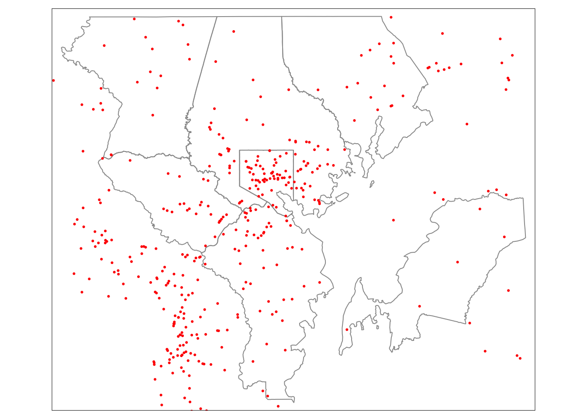
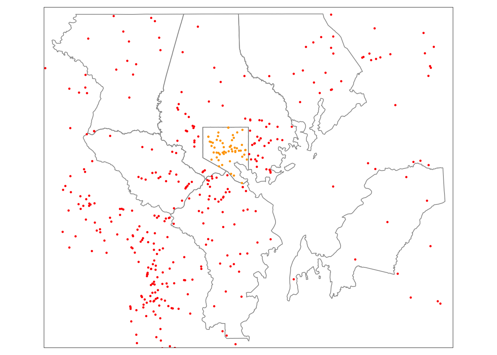
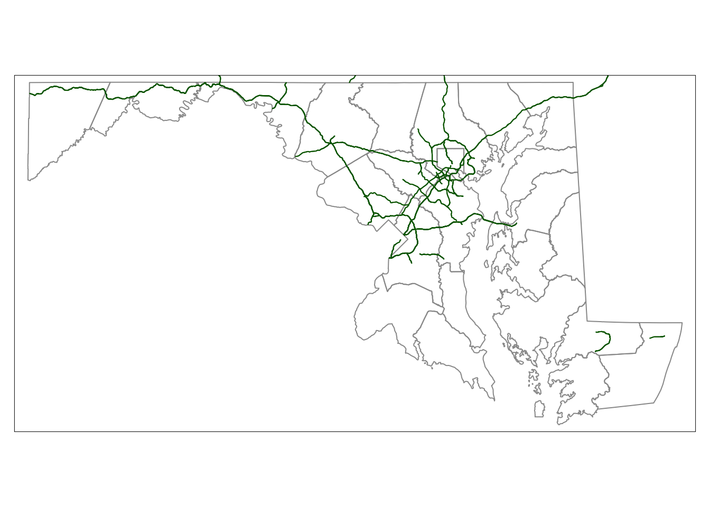
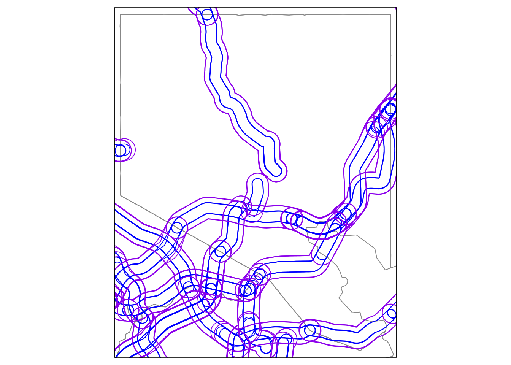

Spatial operations with the sf, tigris, and crashapi packages
This exercise is designed to be used as an interactive activity to better understand how to work with spatial transformation functions from the sf package. A few suggestions:
Questions that require you to figure out a function call before continuing are marked with a 🤔 emoji.
Try not to skip ahead because the answers to earlier questions are sometimes revealed by code later in the document. 😉
If you get stuck, explore the {sf} package documentation or take a look at the {sf} cheatsheet (This exercise also organizes the functions using the same categories as the cheatsheet).
If you are submitting a completed exercise for the course, please make sure to check that the document renders without errors before committing an updated file to your course repository. 💪🏼
Getting started
Loading packages
First we need to load a few packages:
Downloading data
Then, we can download the counties with tigris::counties() and then filter to those counties in the Baltimore–Columbia–Towson Metropolitan Statistical Area.
# Set the state abbreviation
md <- "MD"
# Get the counties with tigris::counties()
md_counties <- tigris::counties(state = md, cb = TRUE)
# FIPS codes for the counties in the Baltimore MSA
msa_fips <- c("510", "005", "013", "003", "027", "035", "025")
# Filter to the counties in the Baltimore MSA
msa_counties <-
filter(
md_counties,
COUNTYFP %in% msa_fips
)I also want data on U.S. highways. We won’t use this data right away but we’ll need it later on in this exercise.
us_highways <- tigris::primary_roads(year = 2020)Now, I can use the county FIPS code column from msa (named COUNTYFP) to get crash data using the {crashapi} package and the National Highway Traffic Safety Administration (NHTSA) Fatality Analysis Reporting System (FARS) API.
Below, I am using purrr::map_dfr() allows us to combine results for each county into a single data frame. When geometry = TRUE, crashapi::get_fars_crashes() is using sf::st_as_sf() to convert a data frame into a sf object based on the longitude and latitude columns.
md_crashes <-
purrr::map_dfr(
md_counties$COUNTYFP,
~ crashapi::get_fars_crashes(
year = 2020,
state = md,
county = .x,
geometry = TRUE
)
)
msa_crashes <-
filter(
md_crashes,
county %in% as.integer(msa_fips)
)If you’re interested in learning more using API packages, check out Ch. 8 Geographic data I/O in Lovelace, Nowosad, and Muenchow (2022). For more on the advanced topic of developing API packages, check out this vignette from the {httr2} package (which is what {crashapi} is using to download data from NHTSA).
Mapping data
For this exercise, we are using the {tmap} package to take a look at the data. Visual checks are often essential to exploring and understanding what the spatial and geometric transformation functions are doing to your data. Similar to ggplot2 plots, you can put the results of a map into an object that you can use as a base map.
Show the code | Map Baltimore MSA boundaries
md_borders <-
tm_shape(md_counties) +
tm_borders(col = "gray60")
msa_borders <-
tm_shape(msa_counties) +
tm_borders(col = "gray60")
msa_borders +
tm_shape(msa_crashes) +
tm_dots(col = "red", alpha = 0.4)
## Warning in sf::st_is_longlat(shp2): bounding box has potentially an invalid
## value range for longlat data
Wait a moment: did you see spot the warning up there? 👆🏼 It said: “Warning in sf::st_is_longlat(shp2): bounding box has potentially an invalid value range for longlat data.”
Where is that coming from? Let’s take a quick look at the data using the base summary() function:
summary(msa_crashes)
## city cityname county countyname
## Length:229 Length:229 Length:229 Length:229
## Class :character Class :character Class :character Class :character
## Mode :character Mode :character Mode :character Mode :character
##
##
##
## case_year fatals latitude longitud
## Min. :2020 Min. :1.000 Min. : 38.73 Min. : -77.17
## 1st Qu.:2020 1st Qu.:1.000 1st Qu.: 39.20 1st Qu.: -76.75
## Median :2020 Median :1.000 Median : 39.30 Median : -76.63
## Mean :2020 Mean :1.061 Mean : 39.73 Mean : -68.20
## 3rd Qu.:2020 3rd Qu.:1.000 3rd Qu.: 39.37 3rd Qu.: -76.53
## Max. :2020 Max. :3.000 Max. :100.00 Max. :1000.00
## state statename st_case totalvehicles
## Length:229 Length:229 Length:229 Min. :1.000
## Class :character Class :character Class :character 1st Qu.:1.000
## Mode :character Mode :character Mode :character Median :1.000
## Mean :1.629
## 3rd Qu.:2.000
## Max. :8.000
## tway_id tway_id2 ve_forms geometry
## Length:229 Length:229 Min. :1.00 POINT :229
## Class :character Class :character 1st Qu.:1.00 epsg:4326 : 0
## Mode :character Mode :character Median :1.00 +proj=long...: 0
## Mean :1.52
## 3rd Qu.:2.00
## Max. :5.00☝️ Hint: look at the range of the latitude and longitude columns.
Did you spot the issue? I can use filter to track down the problem:
filter(
msa_crashes,
longitud > 180 | latitude > 90 | longitud < -180 | latitude < -90
)
## Warning in st_is_longlat(x): bounding box has potentially an invalid value range
## for longlat data
## # A tibble: 2 × 16
## city cityname county countyname case_…¹ fatals latit…² longi…³ state state…⁴
## <chr> <chr> <chr> <chr> <int> <int> <dbl> <dbl> <chr> <chr>
## 1 50 BALTIMORE 510 BALTIMORE… 2020 1 100. 1000. 24 Maryla…
## 2 50 BALTIMORE 510 BALTIMORE… 2020 1 77.8 778. 24 Maryla…
## # … with 6 more variables: st_case <chr>, totalvehicles <int>, tway_id <chr>,
## # tway_id2 <chr>, ve_forms <int>, geometry <POINT [°]>, and abbreviated
## # variable names ¹case_year, ²latitude, ³longitud, ⁴statenameTo fix this issue, we need to crop the data to exclude outlying invalid coordinates. Cropping is one of a few geometry operations supported by the sf package. Let’s dig in.
Geometry operations
Cropping and transforming data
How can I use st_crop() to exclude those incorrectly located crashes? st_crop() takes two parameters:
-
x: Asforsfcobject that you want to crop -
y: Asf,sfc, orbboxobject (or numeric x and y min/max values) that you want to crop to
This pattern of an x and y parameter is common across all the geometry operations although, for at least some, the second parameter is optional.
🤔 What parameters do you need to crop msa_crashes?
# msa_crashes <- st_crop()Oops. Did you get an error?
Here is the catch: both objects need to use the same coordinate reference system for spatial transformation functions to work. To do this we need to know what coordinate reference system msa_crashes is using.
You can use st_crs() to check:
st_crs(msa_crashes)
## Coordinate Reference System:
## User input: EPSG:4326
## wkt:
## GEOGCRS["WGS 84",
## ENSEMBLE["World Geodetic System 1984 ensemble",
## MEMBER["World Geodetic System 1984 (Transit)"],
## MEMBER["World Geodetic System 1984 (G730)"],
## MEMBER["World Geodetic System 1984 (G873)"],
## MEMBER["World Geodetic System 1984 (G1150)"],
## MEMBER["World Geodetic System 1984 (G1674)"],
## MEMBER["World Geodetic System 1984 (G1762)"],
## MEMBER["World Geodetic System 1984 (G2139)"],
## ELLIPSOID["WGS 84",6378137,298.257223563,
## LENGTHUNIT["metre",1]],
## ENSEMBLEACCURACY[2.0]],
## PRIMEM["Greenwich",0,
## ANGLEUNIT["degree",0.0174532925199433]],
## CS[ellipsoidal,2],
## AXIS["geodetic latitude (Lat)",north,
## ORDER[1],
## ANGLEUNIT["degree",0.0174532925199433]],
## AXIS["geodetic longitude (Lon)",east,
## ORDER[2],
## ANGLEUNIT["degree",0.0174532925199433]],
## USAGE[
## SCOPE["Horizontal component of 3D system."],
## AREA["World."],
## BBOX[-90,-180,90,180]],
## ID["EPSG",4326]]
# You can also use st_crs() to get a Spatial Reference identifier (srid) for a coordinate reference system
# st_crs(msa_crashes)$sridThen we need to use the st_transform() function to change to coordinate reference system of msa_counties. The first parameter of st_transform() is always the sf or sfc object to transform but the second parameter can be a number, a character, or the output from the st_crs() function. For example, both of these calls transform msa_counties to the Pseudo-Mercator coordinate reference system used by Google Maps, OpenStreetMap, and other web maps:
st_transform(msa_counties, 3857)
st_transform(msa_counties, "EPSG:3857")🤔 Now it is your turn to transform msa_counties. Fill in the missing parameters:
# msa_counties <- st_transform()Finally, you can crop msa_crashes the way you wanted:
# Overwrite msa_crashes w/ cropped data
msa_crashes <- st_crop(msa_crashes, msa_counties)OK. Let’s map the cropped msa_crashes data:
Show the code | Map crashes in the Baltimore metro area

Take a moment and compare this map with a map of md_crashes (which also needs to be cropped). Remember, tmap uses the bounding box of the first sf object passed to tm_shape() to set the plot area.
md_counties <- st_transform(md_counties, st_crs(md_crashes))
# Crop md_crashes also
md_crashes <- st_crop(md_crashes, md_counties)
msa_borders +
tm_shape(md_crashes) +
tm_dots(col = "red")
Do you notice the difference between the two maps?
Imagine we didn’t have couldn’t use a county attribute to filter msa_crashes from md_crashes. How could we get data that is more like the first map?
Getting the intersection or difference between pairs of simple features
Let’s try out st_intersection(). Like st_crop(), this function takes two parameters but works a more like a cookie cutter—trimming the features of the first parameter to the boundary of the second parameter.
For example, I can trim md_crashes to the boundary of Baltimore City.
md_counties <- st_transform(md_counties, st_crs(md_crashes))
msa_counties <- st_transform(msa_counties, st_crs(md_crashes))
baltimore_city <- msa_counties[7, ]
baltimore_crashes <- st_intersection(md_crashes, baltimore_city)
## Warning: attribute variables are assumed to be spatially constant throughout all
## geometriesThe function did a little more than just exclude the crashes outside Baltimore City. The names and attributes for any intersecting features from the second parameter have been joined to the features from the first parameter. You can actually get the same result using the st_join() function when left = FALSE:
st_difference() works more like an eraser—selectively removing a specific area.
crashes_outside_baltimore <- st_difference(md_crashes, baltimore_city)
## Warning: attribute variables are assumed to be spatially constant throughout all
## geometriesI can map the data to take a look at the results:
Show the code | Map crashes in and outside of Baltimore city

🤔 Now, your turn. Can you use st_intersection() to trim the crash data to Anne Arundel County?
# anne_arundel_crashes <-🤔 Can you map the Anne Arundel County crashes over top of a crash map for the full state?
# md_borders +
# tm_shape(anne_arundel_crashes) +
# tm_dots()🤔 Bonus question: can you figure out how many fatalities occurred in Anne Arundel County? Remember, the number of fatalities may not be the same as fatal crashes. Try using the nrow() and sum() functions to determine these numbers.
If you the intersection worked as expected, you should find 50 crashes and 50 fatalities.
Geometric operations
OK. Let’s try something different. Remember those highways? The data covers the entire U.S. but we just need the highways for Maryland.
This time, I’ll use the st_filter() function with the default st_intersects() predicate (we will come back to predicate functions at the end):
us_highways <- st_transform(us_highways, st_crs(md_crashes))
md_highways <- st_filter(us_highways, md_counties, .predicate = st_intersects)As usual, a map is helpful to make sure this worked the way I expected:
Show the code | Map Maryland Highways

Now that we have highways, could we use st_filter() to get highway crashes? Give it a try:
st_filter(md_crashes, md_highways)
## # A tibble: 0 × 16
## # … with 16 variables: city <chr>, cityname <chr>, county <chr>,
## # countyname <chr>, case_year <int>, fatals <int>, latitude <dbl>,
## # longitud <dbl>, state <chr>, statename <chr>, st_case <chr>,
## # totalvehicles <int>, tway_id <chr>, tway_id2 <chr>, ve_forms <int>,
## # geometry <GEOMETRY [°]>Well, that didn’t work. The highways are a LINESTRING feature so it isn’t the most effective spatial filter. Using st_buffer() we can add a little space around each highway and try again.
How does st_buffer() work? Using the dist (short dor distance) parameter you can add space around a point, linestring, or polygon.
This can get a little complicated depending on your coordinate reference system. When using the GEOS library, the units for dist are degrees for geometric coordinate reference systems (e.g. EPSG:4326) or the system’s native units (most often feet or meters) for projected coordinate reference systems. But, when you are using the s2geometry library, dist is passed to the s2::s2_buffer_cells() function where the units are determined by the units used by the radius parameter (which defaults to meters). It can be helpful to use the units::set_units() function that makes it easier to set the buffer in whatever distance you like and then convert to the needed units.
For this exercise, let’s convert our data projected CRS so we can use the version of st_buffer() that works with GEOS.
Show the code | Transform data to a projected CRS
md_crashes <- st_transform(md_crashes, 3857)
md_counties <- st_transform(md_counties, 3857)
msa_crashes <- st_transform(msa_crashes, 3857)
msa_counties <- st_transform(msa_counties, 3857)
md_highways <- st_transform(md_highways, 3857)Now, I can add a buffer:
I’ll map the data to show that it works (using Baltimore County to set the map bounding box so it easier to see the difference between the two buffers).
Show the code | Map bufferred Maryland highways
tm_shape(msa_counties, bbox = msa_counties[7, ]) +
tm_borders(col = "gray60") +
tm_shape(md_highways_quartermi) +
tm_borders(col = "blue") +
tm_shape(md_highways_halfmi) +
tm_borders(col = "purple")
🤔 A half mile buffer seems too large. Can you add a 250 meter buffer to the md_highways?
# md_highways_250m <- st_buffer()Then, go back and filter crash data using md_highways_250m. How many fatal crashes took place within 250 meters of a highway in Maryland? How many fatalities?
# st_filter()You should find 96 crashes and 99 fatalities.
Confirming geometric relationships
There is also a set of related functions called “predicates” or geometric confirmation functions that take pairs of simple feature geometry sets and return an index list or logical matrix based on the spatial relationship between the features. For example, take a look at st_intersects():
st_intersects(msa_counties, md_counties, sparse = FALSE)
## [,1] [,2] [,3] [,4] [,5] [,6] [,7] [,8] [,9] [,10] [,11] [,12]
## [1,] TRUE FALSE FALSE FALSE TRUE FALSE FALSE FALSE FALSE FALSE FALSE TRUE
## [2,] FALSE FALSE FALSE TRUE FALSE FALSE TRUE TRUE FALSE FALSE FALSE FALSE
## [3,] FALSE FALSE FALSE FALSE FALSE FALSE FALSE FALSE FALSE TRUE FALSE FALSE
## [4,] FALSE FALSE FALSE FALSE FALSE FALSE FALSE FALSE FALSE FALSE FALSE FALSE
## [5,] FALSE FALSE FALSE TRUE FALSE FALSE TRUE FALSE FALSE FALSE TRUE FALSE
## [6,] FALSE FALSE FALSE FALSE FALSE FALSE TRUE FALSE FALSE TRUE FALSE FALSE
## [7,] FALSE FALSE FALSE FALSE FALSE FALSE TRUE FALSE FALSE FALSE FALSE FALSE
## [,13] [,14] [,15] [,16] [,17] [,18] [,19] [,20] [,21] [,22] [,23] [,24]
## [1,] FALSE FALSE FALSE FALSE FALSE FALSE TRUE FALSE FALSE FALSE FALSE FALSE
## [2,] FALSE FALSE FALSE FALSE FALSE TRUE FALSE TRUE FALSE FALSE FALSE TRUE
## [3,] FALSE TRUE FALSE FALSE FALSE FALSE FALSE TRUE FALSE FALSE FALSE FALSE
## [4,] FALSE FALSE TRUE FALSE TRUE TRUE FALSE TRUE FALSE FALSE FALSE FALSE
## [5,] FALSE FALSE TRUE FALSE TRUE TRUE FALSE TRUE FALSE FALSE FALSE FALSE
## [6,] FALSE FALSE TRUE FALSE FALSE TRUE FALSE TRUE FALSE FALSE FALSE TRUE
## [7,] FALSE FALSE FALSE FALSE FALSE FALSE FALSE TRUE FALSE FALSE FALSE TRUEWhat is this matrix? The function is comparing each element of x (msa_counties) to each element of y (md_counties). We can simplify the function by using st_union() on the second argument:
md_counties_union <- st_union(md_counties)
st_intersects(msa_counties, md_counties_union, sparse = FALSE)
## [,1]
## [1,] TRUE
## [2,] TRUE
## [3,] TRUE
## [4,] TRUE
## [5,] TRUE
## [6,] TRUE
## [7,] TRUE